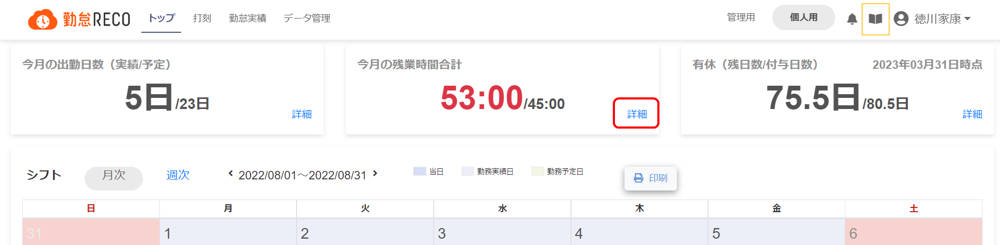
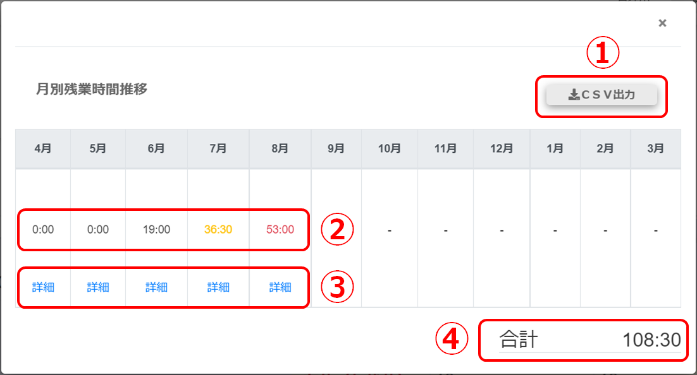

月別残業時間を確認する
月別の残業時間をまとめてCSV形式のファイルに出力できます。
個人用トップ画面で「今月の残業時間合計」の［詳細］をクリックする

「月別残業時間推移」画面が表示され、閲覧時点の年度の残業時間推移を確認できます。

CSV出力
クリックすると表示されている内容をCSV形式のデータに出力します。
月別残業時間
月別残業時間を表示します。
残業のTOP画面通知設定がされている場合、残業時間が注意閾値を超えると黄色、警告閾値を超えると赤で表示されます。
詳細
クリックすると、その月の勤務実績画面を表示します。
合計
今年度の残業時間を表示します。
残業のTOP画面通知設定がされている場合、残業時間が法定年間残業時間を超えると、時間が赤で表示されます。